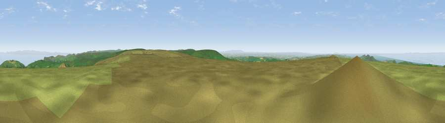

Stone Setting
#2876 in England · top 12% of its area beats it · near ChallacombeThe view, rendered

A 360° render of this exact spot computed from the terrain model, tree cover and land cover — summer colours, afternoon light, calibrated against photographs of famous viewpoints. Real trees, hedges and buildings will differ in detail.
The panorama
Grey silhouette: terrain skyline in each direction (720 bearings, Earth curvature and refraction included). Dashed green: skyline with trees (+15 m) and buildings (+8 m) as obstacles. Blue strip: how far the ground is visible on each bearing.
Where the view opens
Wedge length = distance to the farthest visible ground on that bearing (vegetation-aware). Rings at 10, 25 and 50 km.
What fills the view
65% grassland · 27% water · 4% woodland · 3% cropland ·
Angular shares of the visible panorama (visual magnitude), not map area. Landscape diversity 0.39 (0–1 Shannon).
Key numbers
More beautiful places nearby
The staircase of upgrades: each row has a higher view potential than everything closer. Driving times are estimates from straight-line distance, calibrated against real road routing — check an actual route before setting out.
| Place | Direction | Drive | Score |
|---|---|---|---|
| Viewpoint near Challacombe | W · 0 km | ~1 min | 77.1 |
| Lynton Hill | N · 5 km | ~11 min | 82.7 |
| Viewpoint near Barbrook | N · 5 km | ~12 min | 83.1 |
| Viewpoint near Lynton | N · 6 km | ~13 min | 84.8 |
| Old Tennis Court | NNE · 6 km | ~14 min | 88.3 |
| Holdstone Hill | WNW · 9 km | ~18 min | 90.2 |
| The Knoll | ESE · 100 km | ~125 min | 91.0 |
51.17565, -3.86081 · source: osm peak · position refined by local search. Computed location — check access rights before visiting.